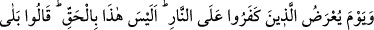

peşinde “ ” ve “ ” mânâlarını şâmil olmasıdır. Sanki “Allah kadir değil midir?”
denilmiş oluyor. Böyle olumsuz bir soru mânâsından dolayı da “ ” şeklinde
cevaplandırılmış yâni olumsuz olan bu soru cevapla olumlu duruma getirilmiştir.
Bu ifâde, Allah’ın kudretini burhan sayılacak şekilde genel olarak takrir
mahiyetindedir. “Belâ” cevabı, olumsuz sorulara mahsus olup meşhur olan görüşe göre
olumsuzluğu iptal ile ortadan kaldırmak içindir.
er-Radiyy, bazılarından bu “belâ” cevabının müsbet sorularda kullanılmasının câiz
olduğunu beyân etmişse de “belâ” menfi sorular için kullanılır.
34. İnkâr edenlere, ateşe sunulacakları gün: Nasıl, bu gerçek değil miymiş?
denildiğinde: Evet, Rabbimize andolsun ki gerçekmiş, derler. Allah: Öyleyse inkâr
etmenizden dolayı azabı tadın! der.
“İnkâr edenler ateşe sunulacakları,” ateşle azap edileceklerini gördüğünüz “gün
(Allah onlara): “(Nasıl), bu” azap -ki siz onu yalanlıyordunuz- “gerçek değil
miymiş?” (der). “Evet, Rabbimiz” -ki işte o Allah Teâlâ’dır- “hakkı için” o azap
gerçekmiş “derler.” Allah Teâlâ yahut cehennem bekçisi olan melek “Öyleyse”
dünyada onu “inkâr etmenizden dolayı azâbı” yenilecek bir şeyi tadıp bunu zevken
hissedenin hissetmesi gibi “tadın” der.”
Kâfirlerin cehenneme sunulmaları Mümin suresi 46. âyette ve bu sûrenin 20. âyetinde
anlatılmıştır. Burada “yevme” kelimesi zarf olup âmili gizli bir “kavl” kelimesidir. Yâni
o gün onlara denilecektir. Evet, bu azâbın gerçekliğini sormak onlarla alay ve onların
Allah’ın vaadini, tehdidini alaya almaları sebebiyledir. Sebe’ sûresi 35. âyette ifâde
edildiği gibi “ve dediler ki biz malca ve evlatça daha çoğuz. Biz azaba uğratılacak
değiliz” demelerine karşı onlara bir sitemdir.
Burada azâbın gerçekliğini itirâf etmişler ve bu cevap ve itirâflarını da yeminle teyid
etmişlerdir. Çünkü onlar dünyada olduğu gibi azabın gerçekliğini itiraf etmekle bir
kurtuluş ümidi içindedirler. Fakat onlar için artık kurtuluş yoktur.
Burada “bâ”, “sebebiyet için” olup emrin mânâsı ise onların dünyada Allah’ın vaad
ve tehdîdini inkâr etmelerine karşı onları aşağılama ve sitemdir. İbn Şeyh şöyle
demiştir: Zâhir olan şudur ki burada emir kalıbının sitemde bir te’siri yoktur. Sitem
mânâsı Allah Teâlâ’nın “Öyleyse inkâr etmenizden dolayı azâbı tadın” kavlinden elde
edilmiştir. Âyette şuna işâret edilmektedir: Bu kâfirler dünyada uzaklık ve
iletişimsizlik, kemâlâtı kabul ve yakınlık sebeplerine ulaşma yolundaki aslî istîdâd ve
kabiliyetlerini ifsad azâbına çarptırılmışlardı. Fakat bâtınî hislerin atâleti ve zâhirî
hislerin galebe çalmasıyla bu azabın ateş ve acılığını tatmıyor ve hissetmiyorlardı. İşte
nasıl ki uyuyan kimse karınca ve pire ısırmasını hissetmezse bunların dünyadaki